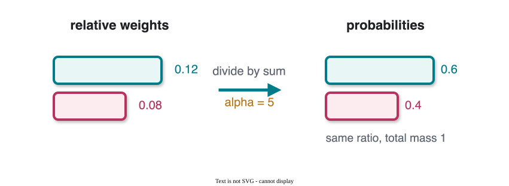
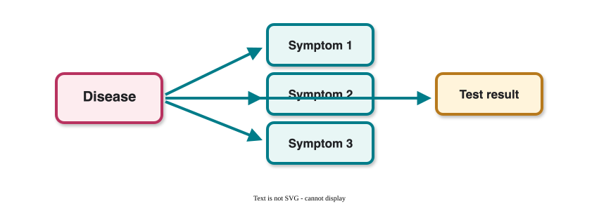

CS 463G & CS 663
(Intro to) AI
Lecture 21: Probabilistic Inference
Fall 2026
Probabilistic Inference
Probabilistic inference computes unknown probabilities from known distributions and evidence.
What Is Inference?
Probabilistic inference answers queries such as P(\text{Query} \mid \text{Evidence}).
Examples:
- Given a medical test result, infer the probability of a disease.
- Given robot sensor readings, infer the robot’s location.
- Given user behavior, infer a likely preference.
The distribution is the model; inference is how we ask questions of the model.
Full Joint Distribution
A full joint distribution assigns probability to every complete assignment of variables.
For weather W and umbrella use U:
| Weather | Umbrella | P(W,U) |
|---|---|---|
| Sunny | Yes | 0.1 |
| Sunny | No | 0.6 |
| Rainy | Yes | 0.2 |
| Rainy | No | 0.1 |
P(U=\text{Yes})=P(\text{Sunny},\text{Yes})+P(\text{Rainy},\text{Yes})=0.1+0.2=0.3
The Toothache Model

Variables:
- C: cavity.
- T: toothache.
- H: probe catches.
| T,H | T,\neg H | \neg T,H | \neg T,\neg H | |
|---|---|---|---|---|
| C | 0.108 | 0.012 | 0.072 | 0.008 |
| \neg C | 0.016 | 0.064 | 0.144 | 0.576 |
Query 1: P(C \lor T)
It is easier to use the complement:
P(C \lor T)=1-P(\neg C,\neg T)
From the full joint table:
P(\neg C,\neg T)=P(\neg C,\neg T,H)+P(\neg C,\neg T,\neg H)
P(\neg C,\neg T)=0.144+0.576=0.72
P(C \lor T)=1-0.72=0.28
Marginalization
To compute a marginal, sum out variables that are not in the query.
P(C)=\sum_T\sum_H P(C,T,H)
For the cavity row:
P(C)=0.108+0.012+0.072+0.008=0.2
“Summing out” reduces a distribution over many variables to a distribution over fewer variables.
Query 2: P(C \mid T)
Conditional probability:
P(C \mid T)=\frac{P(C,T)}{P(T)}
Numerator:
P(C,T)=P(C,T,H)+P(C,T,\neg H)=0.108+0.012=0.12
Denominator:
P(T)=P(C,T)+P(\neg C,T)=0.12+(0.016+0.064)=0.2
P(C \mid T)=\frac{0.12}{0.2}=0.6
Normalization with \alpha
Sometimes we compute only relative probabilities.
\tilde{P}(C \mid T)=(0.12,0.08)
Normalize with:
\alpha=\frac{1}{0.12+0.08}=5
P(C \mid T)=\alpha(0.12,0.08)=(0.6,0.4)
Normalization turns scores or unnormalized probabilities into a distribution that sums to 1.
Normalization Picture

The relative ratio stays the same; only the total mass is rescaled.
Why Normalization Helps
Validity
- Probabilities must sum to 1.
- Normalization rescales values without changing their relative order.
Computation
- Often the denominator is expensive.
- We compute proportional values first.
- Then normalize at the end.
Softmax as Normalization
Softmax turns logits into probabilities:
\text{softmax}(z_i)=\frac{e^{z_i}}{\sum_j e^{z_j}}
Used in classification
The output layer maps raw scores to class probabilities.
Used in transformers
Attention scores become attention weights; output logits become token probabilities.
Full Joint Tables Do Not Scale
For n binary variables, a full joint table has:
2^n
entries.
| Variables | Entries |
|---|---|
| 10 | 2^{10}=1024 |
| 50 | 2^{50}\approx 10^{15} |
| 100 | 2^{100}\approx 10^{30} |
The table is exact, but exactness becomes useless if we cannot store or query it.
The Need for Structure
Full joint inference requires summing many entries.
Structured representations reduce the work by exploiting conditional independence.

This is the motivation for Bayesian networks: compact distributions plus efficient inference algorithms.
What to Remember
- Full joint distributions answer any probability query in principle.
- Marginalization sums out variables.
- Conditioning divides by the evidence probability.
- Normalization rescales relative values into probabilities.
- Full joint tables grow exponentially, so we need structured models.